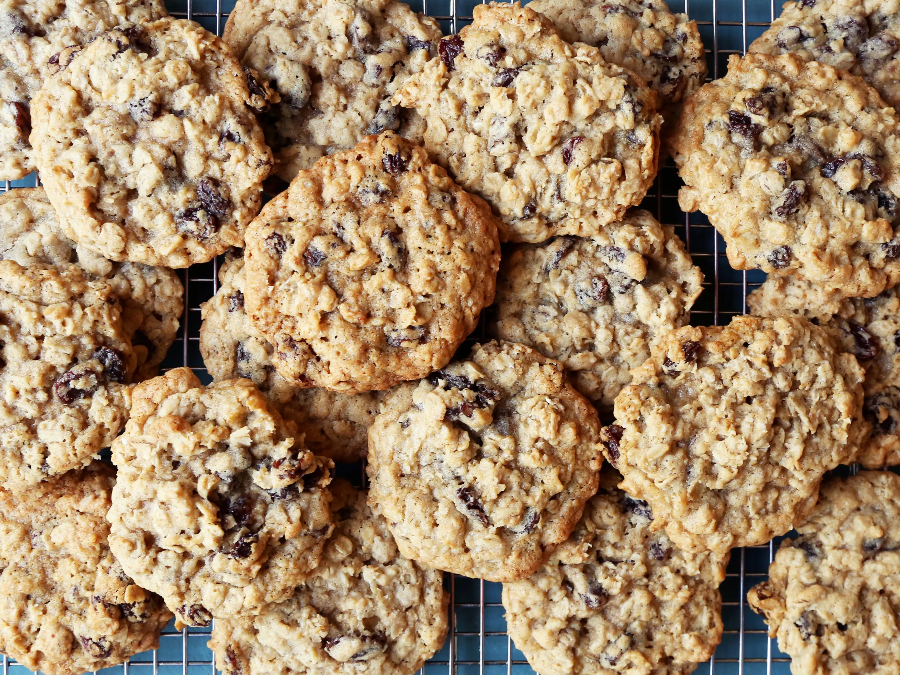

Oatmeal Raisin Cookies

Description
Oatmeal raisin cookies are a classic cookie flavor right next to the
all-time favorite chocolate chip cookies. They are full of warm
flavors blended together with rich sweetness from both brown sugar
and raisins. They are a true comfort!
Ingredients
- 2 cups all-purpose flour
- 1 tsp baking soda
- 1 tsp baking powder
- 1 tsp kosher salt
- 1 cup unsalted butter, softened
- 1 cup sugar
- 1 cup dark brown sugar, firmly packed
- 2 large eggs
- 2 tsp pure vanilla extract
- 3 cups rolled oats
- 1.5 cups raisins
Steps
- Preheat oven to 350°.
- Whisk together flour, baking soda, baking powder, and salt. Set
aside.
- Combine wet ingredients with a hand mixer on low.
- To cream, increase speed to high and beat until fluffy and the
color lightens.
- Stir the flour mixture into the creamed mixture until no flour is
visible.
- (Over mixing develops the gluten, making a tough cookie.) Now add
the oats and raisins; stir to incorporate.
- Fill a #40 cookie scoop and press against side of bowl, pulling up
to level dough (to measure 2 tablespoons of dough).
- Drop 2-inches apart onto baking sheet sprayed with nonstick spray.
- Bake 11-13 minutes (on center rack), until golden, but still moist
beneath cracks on top.
- Remove from oven; let cookies sit on baking sheet for 2 minutes
before transferring to a wire rack to cool.
Home